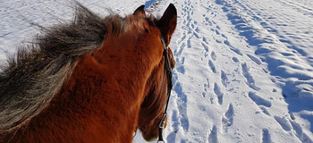

<section class="section"> 
      <div class="container">
        <h1> Balades à Avelin</h1>
        <iframe width="100%" height="600px" frameborder="0" allowfullscreen src="//umap.openstreetmap.fr/fr/map/balades-a-avelin_186909?scaleControl=false&miniMap=false&scrollWheelZoom=false&zoomControl=true&allowEdit=false&moreControl=true&searchControl=null&tilelayersControl=null&embedControl=null&datalayersControl=true&onLoadPanel=undefined&captionBar=false"></iframe><p><a href="//umap.openstreetmap.fr/fr/map/balades-a-avelin_186909">Voir en plein écran</a></p>     
      </div>
      
      <div style="position:relative; height:400px">
         <div style="position:absolute;z-index:1">
            
         </div>
         <div style="position:absolute;top:360px; width:600px; height:400px; z-index:2;font-size:200%">
            <center><b>Ma maison...</b></center>
          </div> 
      </div>
</section>
<section class="section section-grey">
  <div class="container">
      <article class="article article-grey">
        <h1>Pour le plaisir</h1>
        <p>Bonnes balades ! Perrine</p>
      </article>
  </div>
</section>
